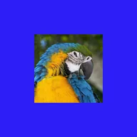

ソリッドマット

レイヤーの背後に単色を配置して透明部分を埋めます。切り抜きではレイヤーの形状を切り抜いた色だけを表示し、スクリーンスペースではレイヤーの枠ではなく画面全体を埋めます。
設定
| 設定項目 | 種類 | 範囲 | デフォルト |
|---|---|---|---|
| 色 | 色 | – | #2D1EF6 |
| アルファ | 数値 | 0%〜100% | 100% |
| パンチアウト | オン／オフ | – | オフ |
| スクリーン空間 | オン／オフ | – | オフ |

レイヤーの背後に単色を配置して透明部分を埋めます。切り抜きではレイヤーの形状を切り抜いた色だけを表示し、スクリーンスペースではレイヤーの枠ではなく画面全体を埋めます。
| 設定項目 | 種類 | 範囲 | デフォルト |
|---|---|---|---|
| 色 | 色 | – | #2D1EF6 |
| アルファ | 数値 | 0%〜100% | 100% |
| パンチアウト | オン／オフ | – | オフ |
| スクリーン空間 | オン／オフ | – | オフ |